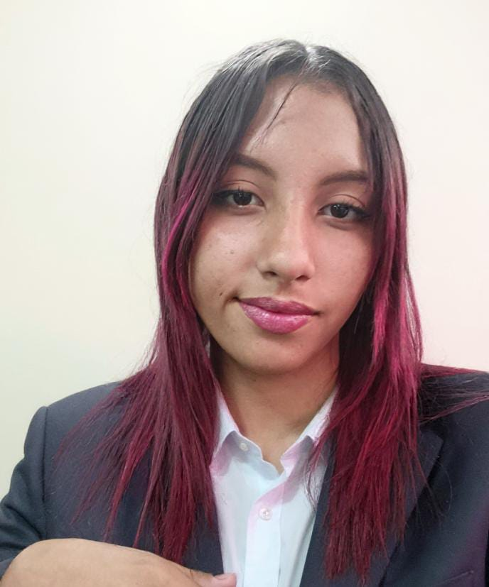

Sharon Assia
Estudiante de Ingeniería Telemática

Sobre mí
Hola buenos dias soy Sharon Assia, una estudiante de Ingeniería Telemática.
Actualmente estoy cursando un tecnico profesional en mantenimiento de sistemas informaticos y estoy aprendiendo
HTML como parte de Producción Multimedial. Voy en el primer cuatrimestre y me gusta la tecnología. Quiero ser una gran ingeniera.
Mis intereses en tecnología
- Automatización y redes
- Apps móviles
- Desarrollo de páginas web
- Videojuegos
Formación académica
- Realizando un Tecnico Profesional en Mantenimiento de Sistemas Informaticos
- Estudiando actualemente Ingeniería Telemática
Habilidades Técnicas
- Manejo básico de HTML y CSS
- Instalación y mantenimiento de equipos
- Soluciono problemas informáticos
- Trabajo en grupos
Contacto
Correo electronico: assiaespinosa07@gmail.com
Numero de contacto: 3007287330
Facebook: Sharon Assia